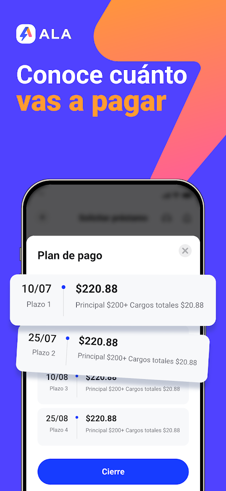

Monto y total a pagar
Compara el importe que recibirás con la suma de todos tus pagos. Revisa el desglose de intereses, IVA y cualquier cargo que aparezca en tu oferta.
Ver un ejemplo con cifrasSolicita desde ALA. Si recibes una oferta, revisa cuánto recibirás, cuándo pagarás y cuál será el total antes de aceptar.
Ya tengo un préstamo
Si encontraste ALA en un anuncio o recibiste un mensaje, compara estos datos con los registros públicos antes de compartir información o hacer un pago.
Si la ficha de SIPRES no abre, busca por razón social en el portal. Las condiciones del crédito se consultan en tu oferta y contrato.
Ten listos tus datos para iniciar la solicitud en tu celular. Cada solicitud está sujeta a evaluación.
Consultar los requisitos de ALAIncluye $305 de intereses y $48.80 de IVA. Tu oferta puede variar. Consulta el contrato.
Al comparar opciones, revisa el total a pagar además del monto de cada parcialidad. Comprueba las fechas y considera cuánto puedes apartar de tus ingresos.
Consultar los costos ›Completa tu solicitud en ALA con tu identificación y cuenta bancaria. Si te aprueban, revisa las condiciones de tu oferta en la app.
Consulta cómo se usan tus datosDe lunes a domingo, de 9:00 a 18:00.
Recibe ayuda con tu solicitud o tus pagos a través de los canales oficiales de ALA.
Ir al centro de ayuda ›Compara el importe que recibirás con la suma de todos tus pagos. Revisa el desglose de intereses, IVA y cualquier cargo que aparezca en tu oferta.
Ver un ejemplo con cifrasLa tasa indica cuánto se cobra de interés. El CAT es una referencia anual para comparar el costo de créditos. ALA publica un CAT promedio de 548.61% sin IVA, calculado al 30 de junio de 2026.
Revisar información y contratoRevisa cuántos pagos harás, de cuánto será cada uno y cuándo vence. Si tus ingresos varían, compara las fechas de pago con el dinero que esperas tener disponible.
Revisar mi capacidad de pago
Anota tus gastos fijos, calcula cuánto puedes apartar y compara el pago total antes de decidir.
Leer la guíaConfirma el remitente y los medios de pago antes de compartir información o transferir.
Leer la guía
Revisa el contrato, consulta tu saldo y usa los canales oficiales para pedir orientación.
Leer la guíaTen lista tu identificación INE o IFE vigente y una cuenta bancaria mexicana a tu nombre. Revisa los requisitos de solicitud antes de comenzar.
Descarga ALA en la tienda de aplicaciones de tu teléfono y regístrate con tu número de celular. Completa tus datos y revisa que tu identificación y la cuenta donde recibirías el depósito sean correctas antes de enviar. Descargar ALA.
Abre la app de ALA con la cuenta que usaste para solicitar. Si tus datos requieren validación o tienes dudas sobre el estado, consulta a Atención al Cliente.
El monto autorizado depende de tu evaluación crediticia. Consulta el monto y las condiciones que aparecen en tu oferta antes de decidir si la aceptas. Enviar una solicitud no garantiza su aprobación.
Verifica cuánto recibirías, en cuántos pagos y en qué fechas debes pagar. Revisa la tasa, los intereses, los cargos aplicables y el total a pagar. Consulta el contrato de préstamo.
En la sección de ejemplo de costo total puedes ver un ejemplo representativo que desglosa el capital, los intereses y el IVA. Los montos de tu préstamo aparecen en el plan de pagos de tu oferta.
En la app, abre Mi cuenta → Mis préstamos para consultar tu fecha, el monto de cada parcialidad y el saldo. Antes de pagar, confirma el beneficiario y la cuenta o referencia en la app. Ver los métodos oficiales de pago.
Guarda tu comprobante y revisa el saldo en la app. Si el pago no se refleja o sigues recibiendo avisos de cobranza, pide a Atención al Cliente que revise el comprobante antes de repetir el pago. Consultar qué hacer.
Contacta a ALA cuanto antes, de preferencia antes del vencimiento. Ten a la mano la fecha, el saldo y los datos de tu préstamo. Las opciones dependen de tu contrato y de la revisión de tu caso. Ver cómo pedir ayuda.
Si te piden transferir a una cuenta personal, abrir un enlace desconocido o compartir contraseñas o códigos de verificación, no hagas el pago ni compartas datos. Verifica el contacto por los canales oficiales de ALA.
Comprueba que el desarrollador sea Quantum Wealth Solutions antes de instalar.
 Escanea para descargar ALA
Escanea para descargar ALA